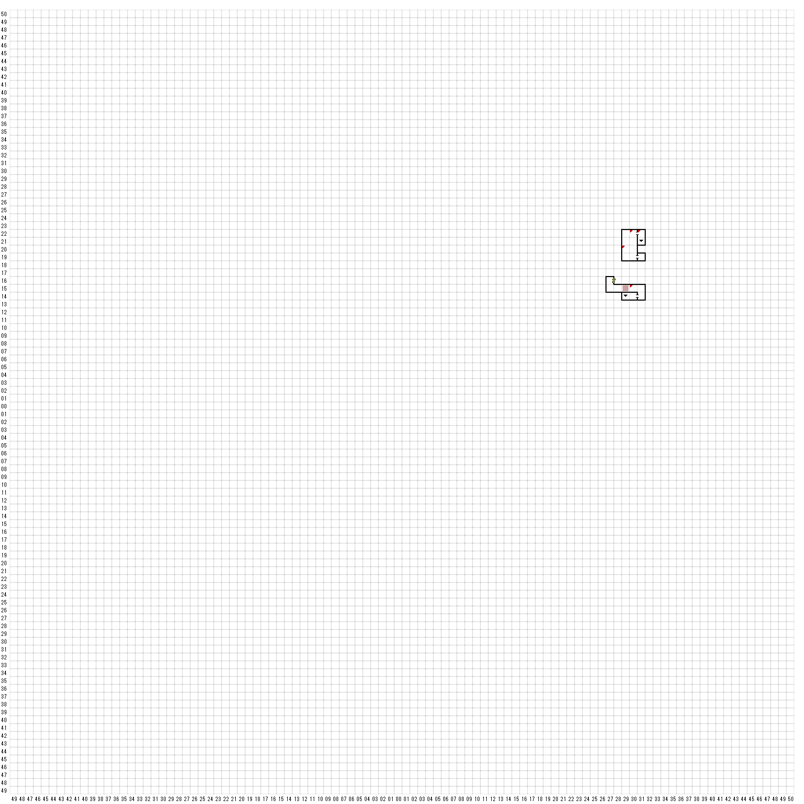

【 東：29，北：20 】
宝箱
Chrome KEY 他
【 東：30，北：22 】
ENCHOUNT
ZOMBIE 1
尖塔の中のベッドやテーブル、椅子などは、
長い年月を経ていながら、
ほとんど元の状態のままであった。
ベッドの上には、古い毛と腐った肉片が
残っていた。それほど遠くない昔に
ここで息をひきとったものがいたのだろう。
【 東：30，北：15 】
大きくて黒ずんだ鐘が、
鐘楼の頂上に静かにぶら下がっていた。
その鐘は薄黒いかびに被われており、
ところどころコウモリのふんが染みをつくっている。
そして、太く長いロープが鐘から下の吹き抜けに
下がっていた。このロープを掴んで吹抜けに
飛び込めば鐘が鳴るのだろう。吹抜けを飛び越えるには、
このロープを使う以外に道はなさそうだった。
ロープを持って吹抜けに飛び込む＞ エンカウント
ロープを使って向こう側に飛び移る ＞ エンカウント
ロープと鐘を放ってその場を立ち去る
【 東：31，北：22 】
ドアは真っ黒で、かなり重そうであった。
その中心にはかんぬきがかかっており。
表面には黒い鉄のスペードの文様がついていた。
KEY of Spadeで開く